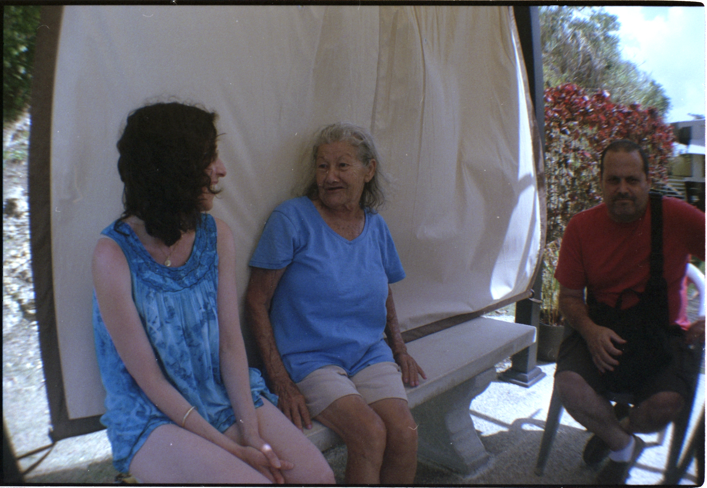
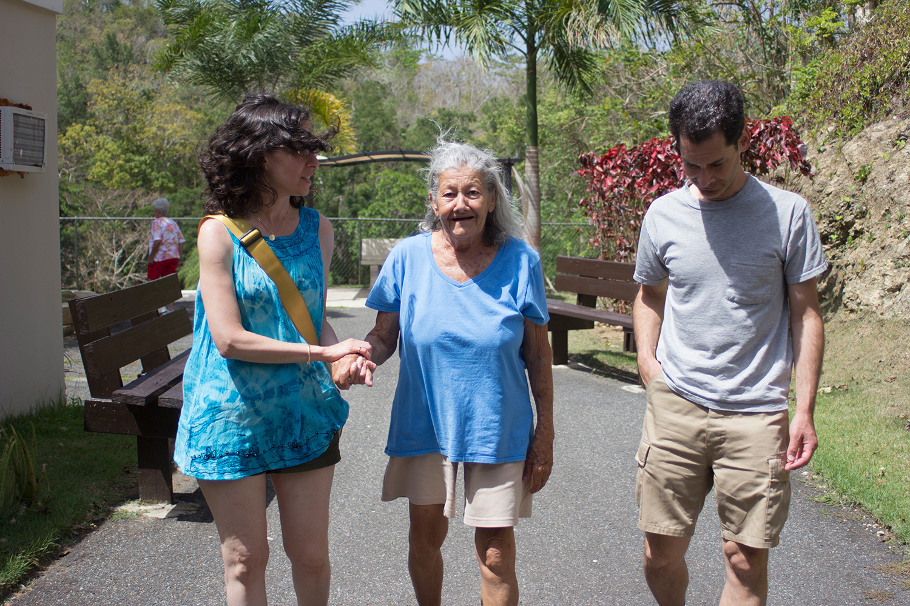
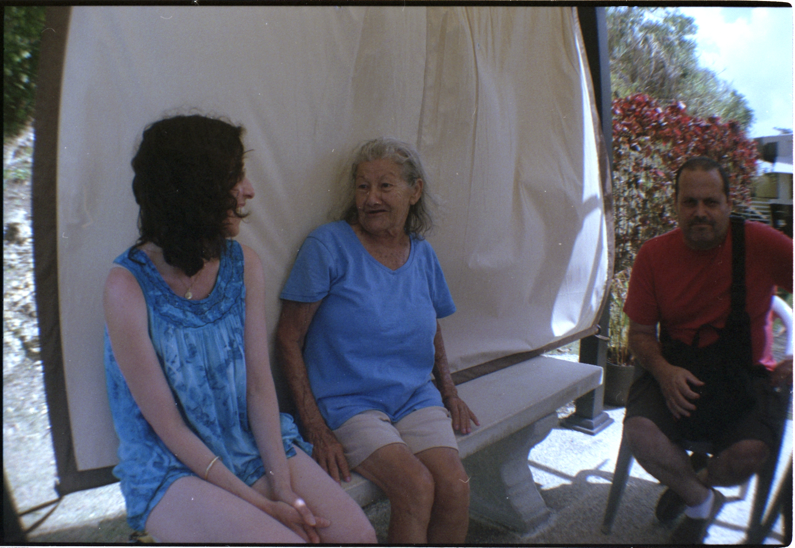
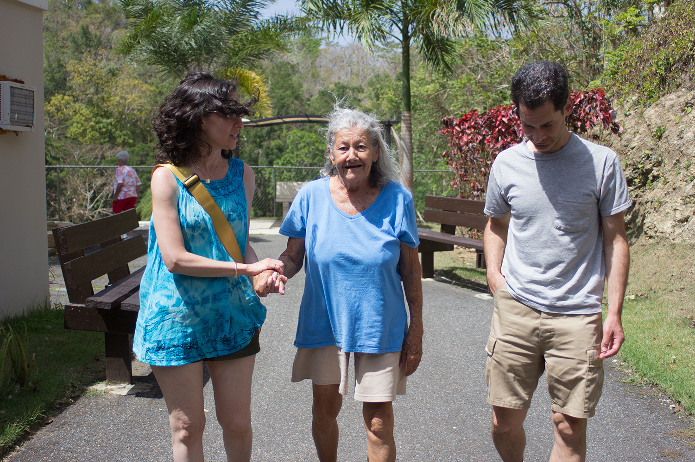
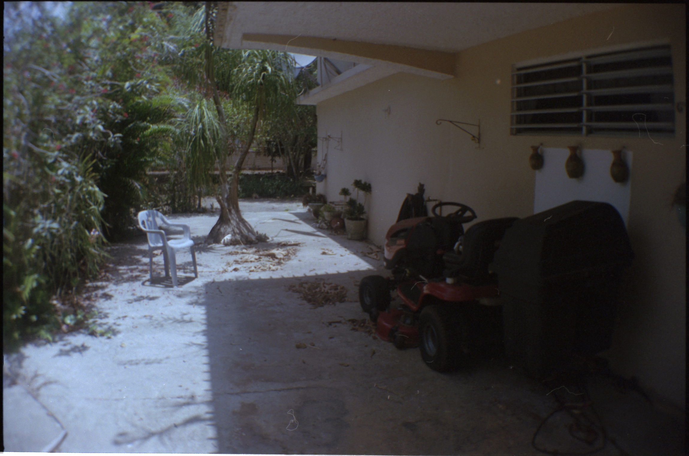
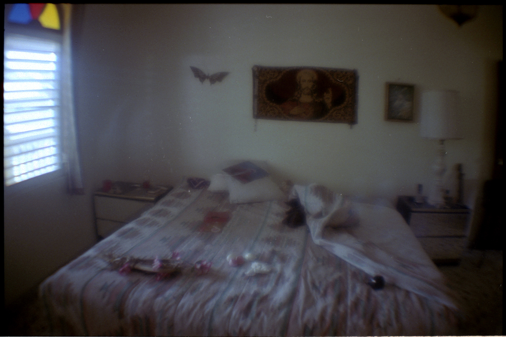
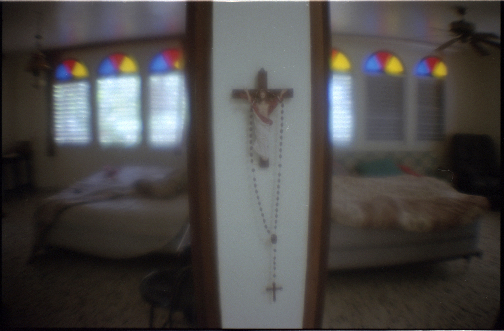
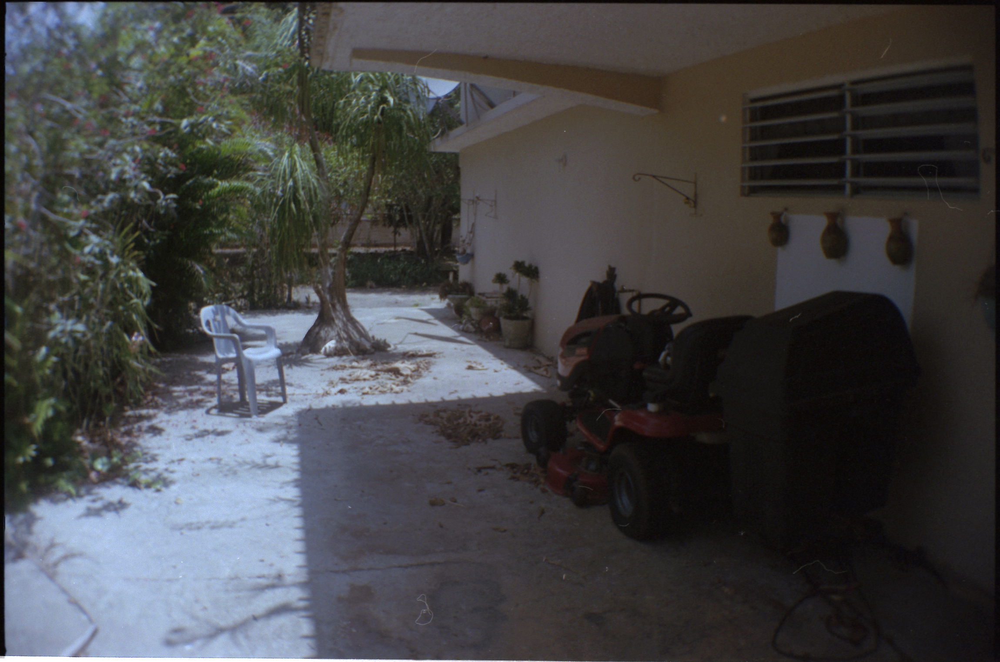
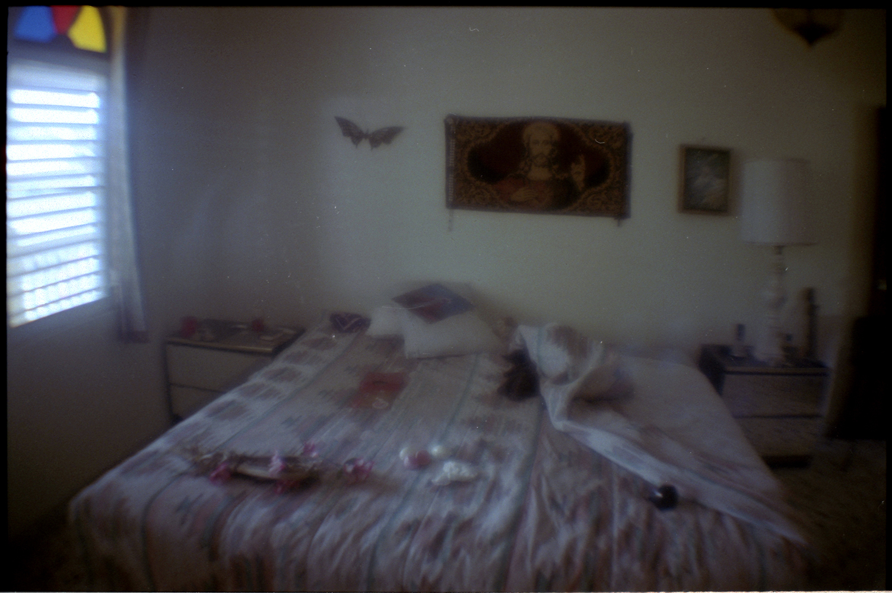
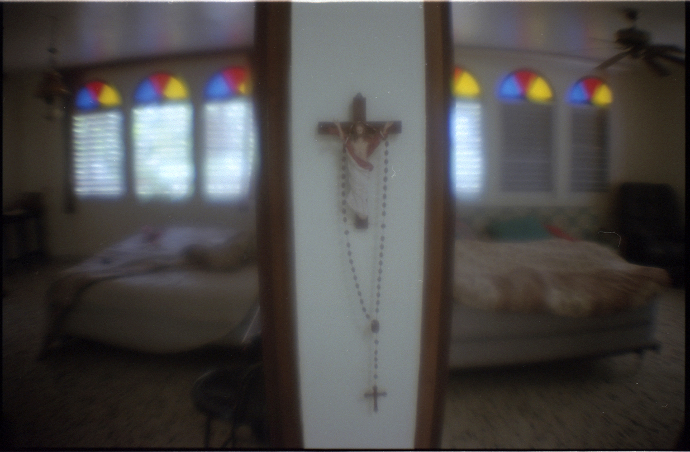

↩︎
↩︎
Photography
↩︎
Projects
↩︎
Doll House
Dreaming
Eshete Woldeyilma
Soy Boricua
120
To Come of Age
Selected Works
↩︎
Portraits
Self-portraits
Fashion
Still Life
Street
Paintings
Drawings
Sculpture
Digital
Street Art
Ambiance
↵︎
Bo·ri·cua
/bôˈrēkwə/
noun informal
a Puerto Rican, especially one living in the United States.
I've never had much opportunity for travel. While my mother is Puertorriqueña and Russian, and my father is Syrian and Russian, we didn't talk about the faraway lands we're from or what we believe in. When my father managed to stockpile enough vacation days, we would always take the opportunity to visit our family in Vega Baja, Puerto Rico. These trips were how I began to understand my background, but growing up in New York, I felt that my life had been a relatively linear narrative in relation to the immense diversity all around me; my patchwork identity only slightly overlapping with some of these cultures.
I didn't grow up in Aleppo like my great-great-grandparents did, and the multiculturalism that they unknowingly contributed to has made me into a microcosm of my city in ways they never could have imagined. My Spanish es de la calle, and my knowledge of Syrian cuisine has come from Damascus Bakery, named after the city that has become the most populous in the wake of la guerra civil. However, my family's monolingualism and fair skin allows us to pass for white in public and our five generations of American babies leaves our authentic Americanness unquestioned.
There is an immense dysphoria that comes with not understanding culture first-hand. Culture, as I define it, is passive. It is absorbed through the cold, cheap, chipping brass of an oversized hoop earring against a nurtured cheek, or a song so cliché that the meaning isn't in the words but the soothing tone.
Sana, sana, colita de rana.
Que no sana hoy, sanará mañana.
I have a choice to identify with my roots, or to indulge in the privileges that the world has afforded me when it decided that white is default. But this choice is not a source of struggle, rather it is the ultimate privilege, that of "passing." My privilege is one of public interaction and perception, and my ability to cloak or to reveal my identity allows me to bask in a self-determination that is the antidote to my dysphoria. However, this lets me deflect the imperative need to engage in substantive discourse or introspection about these privileges. I simply don't have to question my white privilege because I can defensively claim my non-white heritage as a means of exempting myself from these very conversations. But this defensiveness is a departure from a politics that didn't expect us to make an admission of guilt, or to explain that we, too, have a personal stake in an issue before we comment on its importance—and they don't teach this mierda in school.
In my fourth grade Library class, we were each asked to conduct a research project on a country of our choice. Our nimble bodies clamored towards the Geography shelf in hopes of scoring a good country, excitedly descending upon the chaos of choices. The excitement was in the luck of the draw and shouts of territory claimed could be heard across the rug. Many children sought to find a book on their family's homeland, and others scrambled to imperialize the country with the funniest sounding name. This is a common project, and it stems from an effort to aid children in fostering tolerance for cultures unlike their own and in understanding that their experiences are not universal. But, I did not have to learn that my culture is not dominant, or more valid than any other, because I did not understand it, or know where to look for it. When you look white, you are not asked what you are. When you are, then, white, the validity of your culture is not questioned, rather it is left to be. And, so, my culture remained deep in an envelope, filed away, sealed by questions I didn't know to ask. What I had to learn was that I, too, have a beautiful origin story, a history of intergenerational trauma, public intimacy, and three continents of love-that my ancestors left behind traditions and customs all their own, that they trekked for me. I realized then that if I am ever to find a culture, I too, may have to leave my home city and make a trek that spans generations and continents.
 





 




